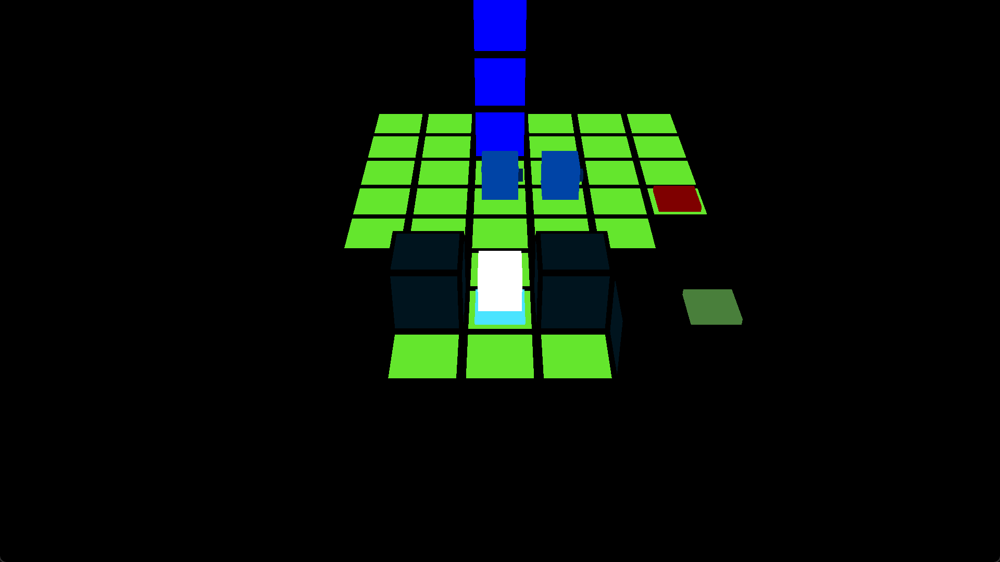

To have a working demo of this project working in four months was very ambitious, and in some ways is a victim of that ambition. I had very little prior experience with 3D graphics and no experience whatsoever with sound, and tried to program as much as I could from scratch. I ran out of time to make a satisfying end for the demo, and was unable to make sound effects I was happy with.
My initial aim of this project was to create a visual language for puzzle design. I do not know how successful I have been at this. When you start designing games, there is a naive optimism that programming is hard and design is easy, and that your ideas for games are interesting and technical skill is your limitation. Yes, programming is hard, but design is also hard.
It's also a testament to the warping power of our influences. The initial idea for this game was a stealth game taking place on a grid, but my time as an intern at Thekla Inc. turned my mind towards sokoban (block-pushing) games. This game initially had a line-of-sight mechanic, but I removed it for a floodfill view mechanic. It became increasingly sokoban-like. I do not have a particularly strong interest in puzzle games compared to other genres, either. I need to keep a very close watch on how I absorb external influences.
I so badly want to cultivate my ability to have interesting, wonderful, and weird ideas. Right now, I am figuring it out.
|
An early test of floodfill view.

|
From when everything was placeholders.
|
|
A strangely beautiful graphics bug.
|
A custom level editor for level design.
|